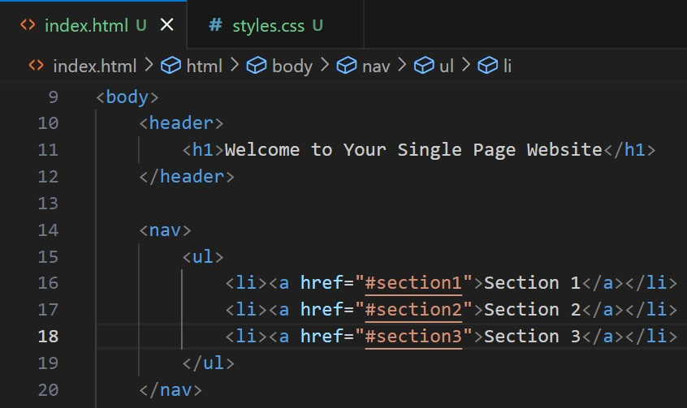

Sound of Snow Falling
White plummets from the heavens, feathers Plucked from the wings of angelsBy a frost-born giantGrinning through his blood stained teeth.The fallen angels are whisked away by the sin Of humanity, their bodies bound to earthly trifles,Bereft of redemption.I sit divided,Only an onlookerTo this violent storm. The thin glass between malevolence and I shuddersAs a hushed winter's whisper begsFor entry .Cold kiss upon the window Threaten to lay me to rest.My icy bones thaw in security,As newspaper kindling crackles,The headline lost to flamesDancing an unknown beat in this endlessWinter.I pity any soul stuck out On the frozen battlefieldOf beauty and death.Both hauntingly mirror one anotherAs impossibilities to mankindNever to be known in theirPurest form.Outstretched like a loose invitationBeneath a blanket of my own thoughtsMy chest fills with a glow akin to thatOf a mother's embrace as I succumb to the comfort of my sanctuary.If only I had read that now burning paperI would've realized its contents.A naked body.Covered in snow.Pronounced Dead.Only minutes from the small cabinThat I rest in.A picture of my faceStrewn across the front page.
Insomnia
sleep taunts me,sandpaper scratching away my thoughts,grinding them intodust.my asipirations shatterlike colliding comets venturingthrough the abyss, theirdestruction predetermined bya cruel higher being.a serpent unfurls itselfwithin my guts. injectingmy bones with a sickening,addictive poison.it pulsates through my blood like the mellow coma of heroin; a beatingheart trembling in the wakeof griefmy eyes drought from depression,invisible rats clawing at my cornea;desparately attempting to escapethe static noise that shreds apartmy remaining sanity.pills play upon my lips, promisesnever kept.futile aritificialities; solutionsfor a natural illnessborn from theobsidian rootstwisted aroundmy brain. am i Hypnos' lost child?why has his benevolence blessed somany others, yethis embracenever welcomesMe?
Choo Choo
This is the content of Section 3. In the shadow of the iron figure the tenacious gears turn in propitious motion with the luminous efforts of the dexterous innovators that drive them. For in this general locality the adept minds of the engineering community endeavor to ameliorate the sophisticated puzzles that surround humanity.
To rouse me fromMy slumberA whistleChimes in theFar away distance.MomentarilyNostalgia washes over me.A cascading riverPouring imagesOf forgotten memoriesInto my sleepyBrain.A lonesome train Chugging alongIn the black sponge of night.
Steam risingTo the starsLike a thought bubbleFilled with dreamsOf apple ciderAnd pumpkin pie.Silver tears dripoff the train'smetallic frame,Cast off by theEternal eyeAbove.Its stare like thatOf a parentTo a childAs if to say"Oh,humanity,Your Choo ChooIs adorable!"